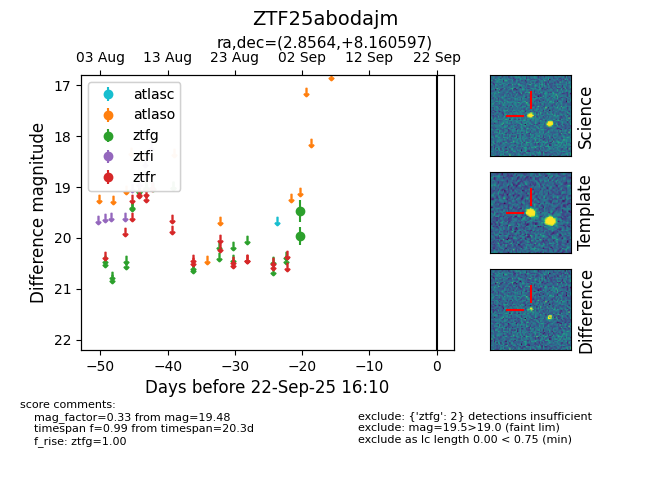

FINK: ZTF25abodajm
Lasair: ZTF25abodajm
ALeRCE: ZTF25abodajm
ZTF25abodajm (ztf,fink)
equatorial (ra, dec) = (2.8564,+8.16060)
galactic (l, b) = (106.1690,-53.40387)

last ztfg=19.48
2 ztfg detections